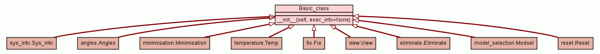

Trees
Indices
Help
relax
Package prompt
::
Module base_class
:: Class Basic_class
[
hide private
]
[
frames
] |
no frames
]
Class Basic_class
source code

Instance Methods
[
hide private
]
__init__
(
self
,
exec_info
=
None
)
All non-user function classes.
source code
Method Details
[
hide private
]
__init__
(
self
,
exec_info
=
None
)
(Constructor)
source code
All non-user function classes.
Parameters:
exec_info
(None or class instance) - The execution information container. This must contain at least the exec_info.intro boolean variable. If not supplied, an instance will be generated.
Trees
Indices
Help
relax
Generated by Epydoc 3.0.1 on Thu Jan 20 18:04:25 2011
http://epydoc.sourceforge.net